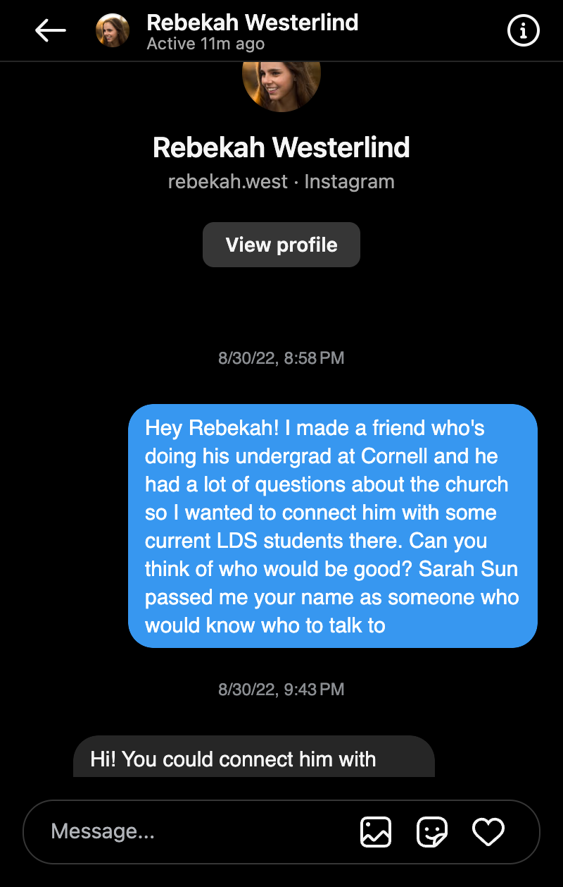
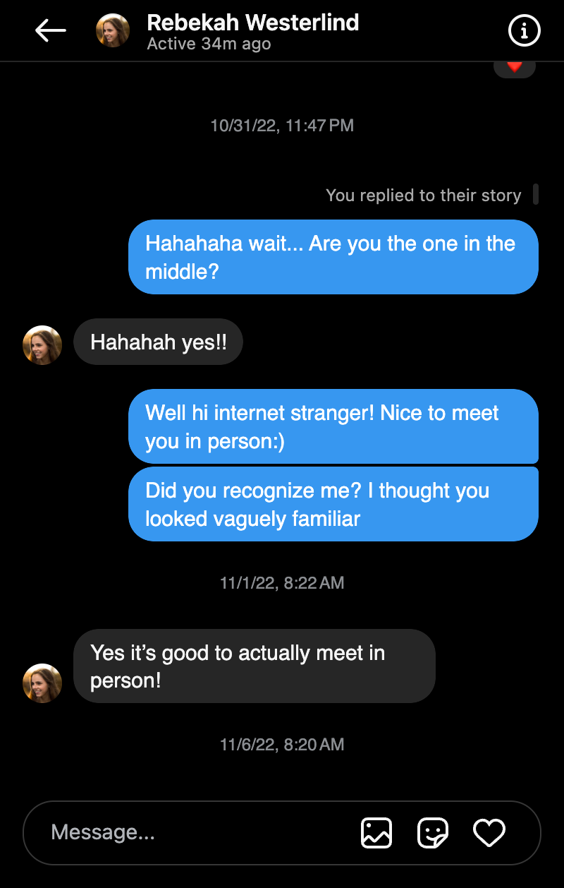
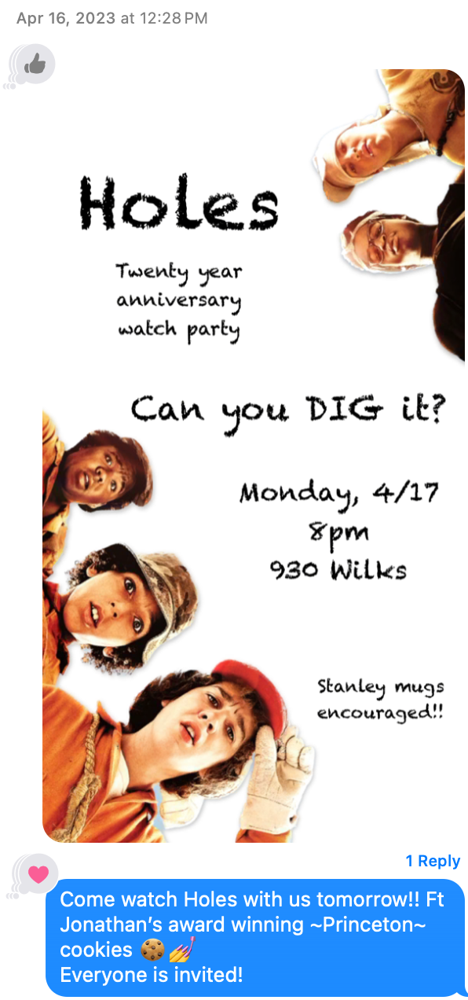
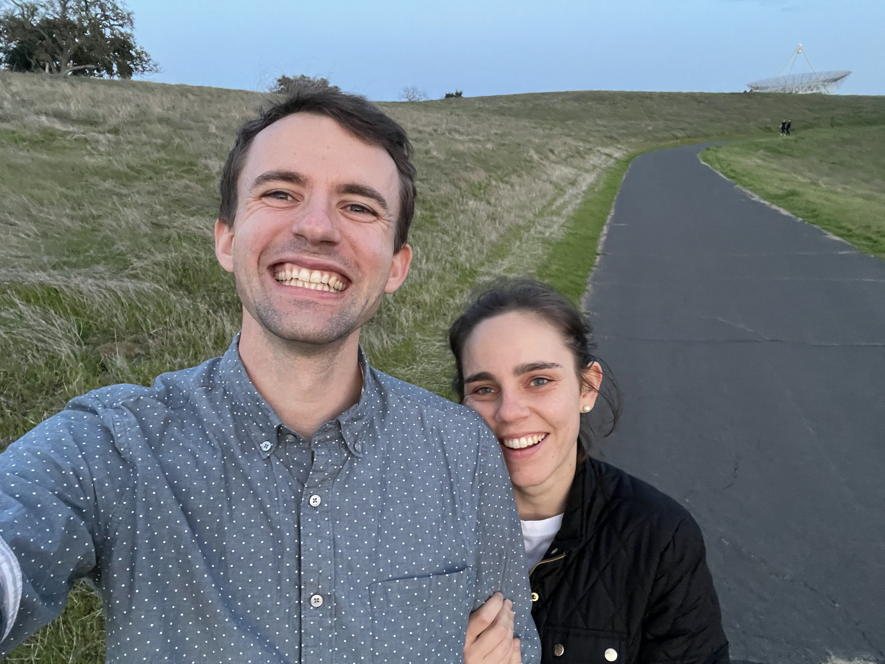

So how did you two meet?
(Written by Jonathan and subject to minor lapses in fact)

First digital interaction
Rebekah and Jonathan both lived on the East coast from 2016 - 2022 where Rebekah attended Cornell for her undergrad and Jonathan attended Princeton for grad school. Both members of The Church of Jesus Christ of Latter-day Saints, they had a lot of overlapping circles of friends since the church community on the East coast is relatively small. That being the case, even though they attended several of the same parties, they somehow never met. In the fall of 2022, they both serendipitously accepted jobs in the SF Bay Area, and moved West, unaware of each other's existence. Then on one fateful day, Jonathan slid into Rebekah's Instagram DMs in the least spicy way possible: church networking. They swapped the requested information and never interacted again.

Second digital interaction
...That is, until three months later, they ended up at the same party without meeting again! This time since they were instagram friends, Jonathan made the connection after the fact. Again, the interaction was disappointingly bland, but I guess every story starts somewhere. They bumped into one another in person for the first time a month later on Monday, Dec 5, 2024 at a Christmas activity. Jonathan was very impressed with how smart Rebekah seemed as she talked about her job as a software engineer at the AI startup Snorkel. Rebekah thought Jonathan was the handsomest, most brilliant man she had ever met, and thought about him for weeks. Just kidding, Rebekah was dating someone at the time, and didn't give the interaction much thought. They saw one another here and there at events, but never interacted beyond that ever again.

The beginning of banter
...That is, until a four months later on April 16, 2023, Jonathan was hosting a watch party for the movie "Holes", and touted his acclaimed "Princeton cookies" (they won a cookie baking competition a few weeks earlier!) in the bizarrely named "Cheeseburgers!" iMessage chat they were both a part of. (Thankfully, just a few months earlier, Jonathan had switched from Android to iPhone, which enabled this interaction.) After Jonathan was deservedly roasted for the pretentious recipe name, Rebekah made the mistake of promoting her Alma Mater in the chat by citing that Stanford was once referred to as the "Cornell of the West," to which Jonathan, a proud BYU alum, responded: "That’s so weird bc I thought they referred to Cornell as the Utah State of the East 😜." (Utah State University is often disparaged as the "little sibling" university of BYU.) Jonathan's incredible remark resulted in *five* laugh reactions, a notable achievement! From that point on, they became better friends, poking fun at each other's schools. Both now single, they however just stayed friends and nothing romantic ever happened.
...That is, until a few weeks later, they had been texting back and forth a little, but on April 30, 2023 Rebekah tangentially referenced the subject of "athletic doping," a subject Jonathan finds wildy fascinating, which prompted him to barrage her with an essay of text messages on the subject of the ethics of biohacking. This led them to exchange 2,665 words over the next four days, culminating in Jonathan asking her out on their first date with an incredibly romantic text message: "What are you up to this weekend? Wanna hang out? ... Saturday lunch date?" Shakespeare would be proud of such flowing prose!

Back to the dish ~2 years later
Rebekah agreed, and their first date happened that very week on Saturday, May 6, 2023. They had a lunch of dosa and fried cauliflower from Dosa Point in Menlo Park, and went up to the Stanford Dish (Rebekah showed him the back entrance the locals use) for a walk. They sat on a log and talked for a while about love and life. Rebekah recalls from their first date that Jonathan mentioned his three criteria for a long term partner were: they be aligned in their approach to God and religious practice, she bring out in him a version of self that he really enjoyed (and vice versa), and that they be able to interact for 20+ hours continuously without running out of topics to discuss. She thought the last criteria was a bit ridiculous but was impressed by his thoughtfulness. Jonathan recalls from their first date that Rebekah asked fantastic questions and was an engaging conversationalist. He remembers thinking that if anyone could pass the 20 hour test, Rebekah just might be able to. However, at the time of their first date, they were both recovering from heartbreak and not really ready to date, so they decided to just be friends, and this time, really, nothing romantic ever happened.
Think there might be more to the story?? Come to the reception to find out!